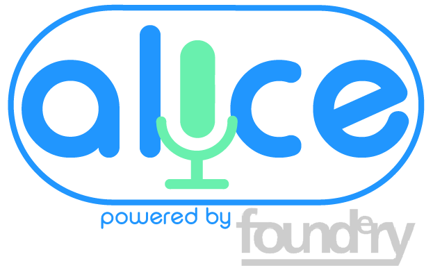

<ion-content padding>
  
</ion-content>

<ion-footer>
  <ion-toolbar>
    <button ion-button block light (click)="navigateForward()">Login</button>
    <button ion-button block light (click)="navigateForward()">Register</button>
  </ion-toolbar>
  <p align="center"><a>Forgot password?</a></p >
</ion-footer>